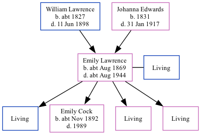

Emily Cock (née Lawrence) cAug 1869 - c1944
[ Home ] | [ Calendar ] | [ Surnames Index ] | [ Family History ]The child of William Lawrence (a harbor laborer) and Johanna Edwards, Emily Lawrence, the great-great-aunt of <a href="I1.html">Nigel Horne</a>, was born in St Lawrence, Thanet, Kent, England <i>c.</i> Aug 1869<span class="citation">1,2</span>, was baptized there on Aug 8, 1869 and also married Berzillai Cock (a shipwright with whom she had 4 children: <a href="I3110.html">Barzillai Stephen W</a>, <a href="I3105.html">Emily Elizabeth</a>, <a href="I3111.html">Mary Lilian</a> and <a href="I3112.html">Elsie E</a>, along with 3 surviving children) there, on Dec 9, 1888<span class="citation">4</span>.</p><p>Throughout her life, she lived at Rear of Southwood Lodge, St Lawrence, Thanet, Kent, England on Apr 2, 1871<span class="citation">6</span>; and on Napier Road, Gillingham, Kent on Mar 31, 1901<span class="citation">7</span>. <p>She died <i>c.</i> Aug 1944 in Chatham, Kent<span class="citation">3</span> and was buried in Gillingham, Kent on Sep 15, 1944<span class="citation">5</span>.
Parents
- William was born c. 1827
- Johanna Brooker was born in 1831
Children
- Emily Elizabeth was born c. Nov 1892
Citations
- 1871 England Census Online publication - Provo, UT, USA: The Generations Network, Inc., 2004.Original data - Census Returns of England and Wales, 1871. Kew, Surrey, England: The National Archives of the UK (TNA): Public Record Office (PRO), 1871. Data imaged from the National
- England & Wales births 1837-2006 - Findmypast
- England & Wales deaths 1837-2007 - Findmypast
- Kent Marriages And Banns - Findmypast
- Kent Burials - Findmypast
- 1871 England, Wales & Scotland Census - Findmypast (was age 1 and the daughter of the head of the household)
- 1901 England, Wales & Scotland Census - Findmypast (was age 32 and the wife of the head of the household)
Media
England & Wales births 1837-2006 - BMD/B/1869/3/AZ/000406/292
Kent marriages and banns - GBPRS/CANT/M/97022138/2
England Marriages 1538-1973 - R_848396598/2
1901 England, Wales & Scotland Census - GBC/1901/0005781310
England & Wales Deaths 1837-2007 - BMD-D-1944-3-AZ-000156-093
Kent Baptisms - GBPRS/CANT/B/96404677
England Births & Baptisms 1538-1975 - R_885341121
Kent Burials - KENT/FHS/BUR/CIVIL/086001
Family Tree
Generated by Ged2Site. Last updated on Jul 20, 2025